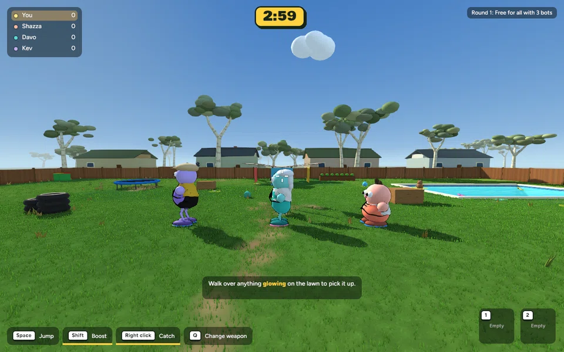
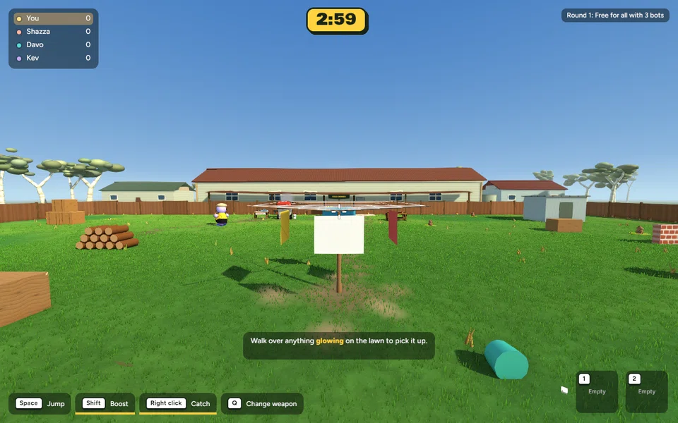

Implemented animation polish · 21 October 2026 · Awaiting review
Grounded footsteps, smoother body turns and gentler starts/stops. Foot motion follows sideways and backwards travel. First-person head bob is reduced and fades out at rest. Aim, movement speed, collisions and rules remain unchanged.
Actual running-game capture of a scripted test: pause, walk a curved route, stop and turn on the spot. From left to right: maximum, medium and no legs. This demonstrates the new animation; it is not ordinary match footage.

Same camera, bot setup and capture interval. Characters also throw and react during this live simulation. These clips retain the game's existing cartoon personality.

650 tests passed; release build passed. Paired performance check: 9.165 → 9.201 ms mean frame time (109.11 → 108.69 FPS), with the same mesh/material/image counts. This is one 600-frame wall-clock sample per build on this Mac, not a GPU benchmark or a claim about other hardware.
This remains procedural animation: some foot sliding can remain at sprint speed or during abrupt reversals. Attack poses keep immediate facing. No fresh WAN multiplayer session was performed.